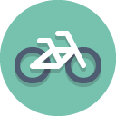

Día Mundial de la Bicicleta


 2
2 4
4 5
5 6
6 8
8

El primer antecedente de la bicicleta se considera el artífice que inventó el francés Sivrac en 1690, llamado celífero. Se trataba de un aparato sin manillar y de madera con dos ruedas unidas en medio por dos ejes. Para que funcionara, se necesitaba darse impulso con los pies.
En 1816, un alemán solucionó el problema de la dirección y creó una máquina, cuyo nombre era draisiana, con un manillar que permitía el giro de la rueda delantera. A este aparato se le fue introduciendo mejoras con los años, hasta que en 1839 el escocés Kirkpatrick Macmillan añadió unas palancas de conducción y los pedales, lo que permitió que el ciclista no tocara con los pies al suelo.
En 1885, fue John Kemp Starley quien creó la llamada bicicleta de seguridad, en la que introdujo la rueda delantera más pequeña, los rodamientos propulsados por una cadena y los frenos. Es decir, inventó la primera bicicleta con muchas similitudes a la bicicleta que hoy en día todos tenemos en la cabeza.
A partir de esta nueva bicicleta y de su evolución, se han creado la bicicleta de pista (en la década de los 60) y la de montaña (en la década de los 70). Y, a partir de aquí, se han inventado muchos tipos y modelos de bicicletas, pensados para adaptarse al máximo a las necesidaes de todo el mundo.
La bicicleta sí es efectiva como medio de transporte para distancias no tan extensas, para usarla dentro de una ciudad o pueblo es de mucha utilidad.
El uso de la bicicleta está extendido en casi todo el continente europeo. En países como Holanda, Suiza, Alemania, unas zonas de Polonia y en los países nórdicos; se ha convertido en uno de los primordiales medios de transporte. Pasando a Asia, fundamentalmente en China y La India, es la primera forma de transporte.
Actualmente, en el mundo, existen cerca de 800 millones de bicicletas, siendo China el país poseedor de la mayor cantidad de estos vehículos.
Las bicicletas de montaña (también conocidas como MTB) están diseñadas para “fuera de ruta” por lo que son bastante resistentes. Están equipadas con llantas anchas con dibujos marcados para mejorar el agarre en terrenos sueltos.
Son bicicletas orientadas a obtener velocidad en pavimento, de construcción más ligera que otras bicicleta, están dotadas con ruedas más grandes, delgadas y provistas de llantas angostas y con dibujo liso.
Las bicicletas híbridas son bastante versátiles ya que combinan características de las bicis de montaña y de las de ruta.
Normalmente tienen una sola velocidad, o sistema de cambios internos de ser necesario. Estas bicicletas permiten una posición relajada de torso y brazos.
Las BMX utilizan cuadros pequeños y resistentes, ideales para saltos y acrobacias para usarse en rampas o en la calle.
Si deseas conocer que bicicleta se adapta a tus necesidades entonces consulta la página:
Lo que todo mundo debe saber antes de comprar una bicicletaHacen bicicletas para todo tipo de usos: carretera, triatlón y montaña tanto para competición como para usos un poco más recreativos, además de tener una gran gama de complementos y vestuario para el ciclista.
Esta mítica marca norteamericana de bicicletas lleva varios años siendo la máxima rival de Specialized, pues hacen máquinas muy avanzadas tecnológicamente y además patrocinan a muchos equipos de competición.
Esta empresa taiwanesa es uno de los principales fabricantes de bicicletas del mundo, pues no sólo hace sus propias bicicletas sino que además es uno de los que más cuadros elabora para terceros.

Una de las marcas más vanguardistas en todos los segmentos competitivos: montaña, carretera y triatlón.
Es al igual que Merida una marca taiwanesa que a pesar de hacer productos propios, es también de los principales fabricantes de cuadros del mundo para terceros.
Este día se celebra porque el 19 de abril de 1943 el doctor Albert Hofmann, padre del LSD, ingirió a propósito 250 µg de LSD. Tras ingerir la sustancia, Hofmann sintió que le costaba hablar de forma razonable y pidió a su asistente de laboratorio, que estaba al tanto del experimento, que le acompañase en su viaje a casa en bicicleta, pues, por las restricciones del período de guerra, no había automóviles disponibles.
Cuando llegó a casa, llamó a un doctor cuando este llegó, no encontró ningún síntoma físico anormal, salvo las pupilas extremadamente dilatadas
Desde entonces, todos los años, el 19 de Abril en todo el mundo la gente coge su bici para rememorar aquel “primer viaje” en bicicleta del doctor Hofmann.